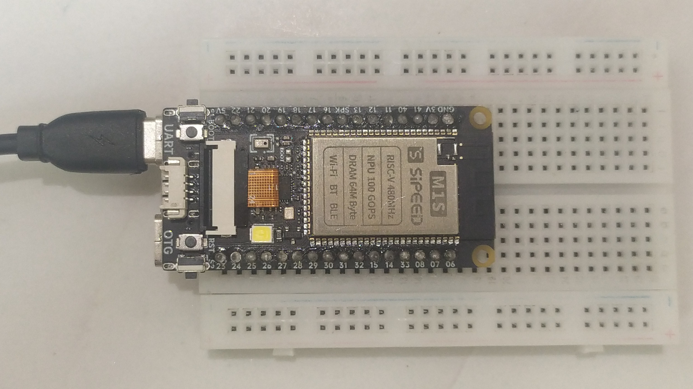

Sipeed M1s DOCK (sipeed-m1sdock)
|
 Sipeed M1s DOCK sitting on a breadboard | |
| Manufacturer | Sipeed |
|---|---|
| Name | M1s DOCK |
| Codename | sipeed-m1sdock |
| Released | 2022 |
| Category | testing |
| Original software | FreeRTOS |
| Hardware | |
| Chipset | Bouffalo Lab BL808 |
| CPU | 1x T-Head C906, E907 and E902 |
| GPU | 2D Accelerator |
| Display | 280x240 IPS (optional) |
| Storage | 16MB SPI |
| Memory | 64 MB PSRAM |
| Architecture | riscv64 |
{kind=link}
| USB Networking | |
|---|---|
| Flashing | |
| Touchscreen | |
| Display | |
| WiFi | |
| FDE | |
| Mainline |
Works
|
| Battery |
Unavailable
|
| 3D Acceleration |
Unavailable
|
| Audio | |
| Bluetooth | |
| Camera | |
| Camera Flash | |
| GPS |
Unavailable
|
| Mobile data |
Unavailable
|
| SMS |
Unavailable
|
| Calls |
Unavailable
|
| USB OTG / USB-C Role switching | |
| NFC |
Unavailable
|
| Accelerometer |
Unavailable
|
|---|---|
| Magnetometer |
Unavailable
|
| Ambient Light |
Unavailable
|
| Proximity |
Unavailable
|
| Hall Effect |
Unavailable
|
| Barometer |
Unavailable
|
| Power Sensor |
Unavailable
|
| Keyboard |
Unavailable
|
|---|---|
| Touchpad |
Unavailable
|
| USB-A |
Unavailable
|
| HDMI/DP |
Unavailable
|
| Ir TX |
Unavailable
|
| Ir RX |
Unavailable
|
| Stylus |
Unavailable
|
| Haptics |
Unavailable
|
| Ethernet | |
| FOSS bootloader |
Works
|
Sipeed M1s DOCK is a development board based on the Sipeed M1s module, it has two USB-C ports, a microphone, a white LED, an SD card slot and support for Wi-Fi 4, Bluetooth 5 (with LE). It runs FreeRTOS as the operating system.
Despite being a small board that fits on a breadboard, it has a MMU and can run Linux. A PoC Linux demo is available on Sipeed's Wiki.
1.69-inch IPS LCD and 2 MP camera is not included, however Sipeed sells a bundle that include the M1s DOCK, Display and Camera.
Mainline Linux support is actively being developed by the OpenBouffalo community, and this pmOS port uses that.
Contributors
- Danct12
Users owning this device
How to enter flash mode
- BL808 Bootloader: Plug in the device then hold down BOOT and hit RST.
- BL702 Bootloader: While holding the BOOT key, plug in the device.
Installation
| When the board is plugged into a computer, there should be two new serial device appears on the computer (mainly ttyACM0 and ttyACM1). If one is only shown, you will have to reflash the BL702 firmware. |
Flash postmarketOS to SD card
| WARNING: Booting Linux from the SD card requires U-Boot to be installed on SPI Flash. |
| WARNING: There may be incompatibilities with some SD card, it is recommended to try 32GB SD cards. This is currently being investigated by OpenBouffalo team. |
The internal SPI flash is only 16MB, which isn't enough to fit a minimal postmarketOS installation. Even if it's possible through memory upgrades, it'll never be supported.
$ pmbootstrap init # vendor: sipeed, device: m1sdock
$ pmbootstrap install --sdcard=/dev/sdcard # replace /dev/sdcard with the main block device of the SD card reader
The first boot takes longer, as the root partition gets resized to fit the whole SD card. DO NOT REBOOT, POWER OFF OR UNPLUG THE BOARD WHILE IT IS RESIZING.
Install U-Boot to SPI
The Sipeed M1s firmware by default does not have any SD card functionality. In order to boot to Linux on the SD card, U-Boot needs to be installed.
- Download the latest version of Bouffalo Lab Dev Cube and Buildroot for BL808
- Open BLDevCube for your platform, select
BL808
as platform and hit Finish.
BLDevCube - MCU
- Go to the
MCU
tab - Set the following:
- M0 Group [Group0] Image Addr [0x58000000] m0_lowload_bl808_m0.bin]
- D0 Group [Group0] Image Addr [0x58100000] d0_lowload_bl808_d0.bin]
- Set port to /dev/ttyACM1 and hit 'Create & Download'
When it finishes, switch to IOT tab.
BLDevCube - IOT
- Enable 'Single Download', set Address with 0x800000, choose bl808-firmware.bin
- Click 'Create & Download' again and wait until it's done
If you're having trouble following the text-based guide, check out these images:
MCU Tab
IOT Tab
{kind=link}
{kind=link}
Once everything is done, use PuTTY or Minicom and connect to the lower serial port (/dev/ttyACM0) with baudrate 2000000 8n1. Then hit the RST button on the board, if you see U-Boot then it is installed!
See also
- pmaports!4025 initial MR
- Device package
- Kernel package